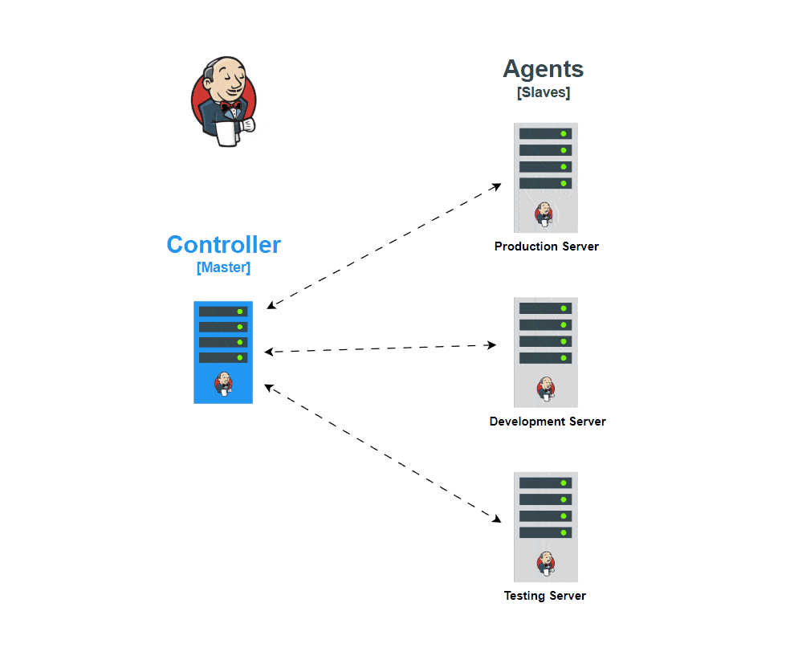

Présentation Générale de Jenkins
Introduction
Jenkins est un outil open-source d'intégration et de livraison continues (CI/CD), principalement utilisé pour automatiser les processus de développement, de test et de déploiement des applications. Créé en 2011 comme une évolution de Hudson, Jenkins est devenu une référence dans le domaine DevOps et CI/CD grâce à sa flexibilité, son large écosystème de plugins, et sa grande communauté de contributeurs.
Principales Fonctionnalités de Jenkins
-
Intégration Continue (CI) : Jenkins permet aux équipes de développement de construire, tester et intégrer du code fréquemment et automatiquement, garantissant que les nouvelles modifications n’introduisent pas de régressions.
-
Livraison Continue (CD) : En plus de l’intégration continue, Jenkins automatise les étapes de déploiement vers les environnements de test, de préproduction, et de production, réduisant le délai de mise en production.
-
Pipeline as Code : Avec Jenkinsfile, Jenkins permet de définir les pipelines CI/CD sous forme de code, facilitant la gestion, le versioning, et la standardisation des pipelines.
-
Écosystème de Plugins : Jenkins propose plus de 1 500 plugins pour étendre ses fonctionnalités. Ces plugins permettent d’intégrer Jenkins avec des outils de contrôle de version (Git, SVN), de gestion des conteneurs (Docker), de cloud (AWS, Azure, GCP), de tests, de surveillance, et bien d’autres.
-
Gestion des Notifications et Reporting : Jenkins envoie des notifications (par e-mail, Slack, etc.) sur les résultats des builds et les étapes de pipeline, permettant aux équipes de suivre et d’agir en temps réel. Il génère également des rapports pour aider à analyser les performances et les résultats des tests.
-
Extensibilité et Scalabilité : Jenkins peut être configuré pour distribuer des tâches sur plusieurs machines grâce à une architecture maître-agent, permettant d’exécuter des builds en parallèle et de répondre aux besoins croissants des équipes.
Architecture de Jenkins
-
Jenkins Master : Le serveur principal gère l’interface utilisateur, les configurations de jobs, la planification des builds, et le déclenchement des tâches. Il coordonne aussi les agents et collecte les résultats des exécutions.
-
Jenkins Agent : Les agents (ou "nœuds") sont des machines qui exécutent les tâches de build et de test. Cela permet de décharger le serveur principal et de répartir les tâches, ce qui est essentiel pour les grandes équipes ou les projets nécessitant des ressources importantes.
-
Pipeline Jenkins : Le pipeline est un ensemble d’étapes qui représentent le workflow de CI/CD. Avec Declarative Pipeline (plus simple et structuré) ou Scripted Pipeline (plus flexible), Jenkins offre la possibilité de définir des pipelines complexes, incluant des étapes de build, de test, de déploiement, et de reporting.

Les Pipelines Jenkins
Les pipelines permettent d’automatiser et d’orchestrer les étapes CI/CD sous forme de code.
- Jenkinsfile : Un fichier qui décrit le pipeline en utilisant soit une syntaxe déclarative, soit une syntaxe scriptée. Le Jenkinsfile permet d’intégrer le pipeline dans le contrôle de version.
- Stages et Steps : Un pipeline est structuré en stages (phases du workflow) et steps (actions spécifiques). Par exemple, un pipeline typique inclura des étapes de build, de tests, et de déploiement.
- Multibranch Pipeline : Jenkins peut automatiquement détecter et exécuter des pipelines pour chaque branche d’un dépôt Git, permettant ainsi de tester et déployer le code de manière indépendante par branche.
Exemple de Jenkinsfile (Déclaratif) :
pipeline {
agent any
stages {
stage('Build') {
steps {
echo 'Building...'
sh 'make build'
}
}
stage('Test') {
steps {
echo 'Testing...'
sh 'make test'
}
}
stage('Deploy') {
steps {
echo 'Deploying...'
sh 'make deploy'
}
}
}
}
Avantages de Jenkins
- Automatisation et Productivité : En automatisant les builds et les tests, Jenkins réduit le besoin d’interventions manuelles, permettant aux équipes de se concentrer sur le développement.
- Flexibilité et Extensibilité : Grâce à son écosystème de plugins, Jenkins peut être intégré avec presque tous les outils DevOps.
- Scalabilité : L’architecture maître-agent permet d’exécuter des centaines de builds en parallèle, ce qui est essentiel pour les projets complexes.
- Transparence et Collaboration : Jenkins génère des rapports et notifications, offrant une visibilité complète sur l’état du code et facilitant la collaboration entre les équipes.
Cas d'Usage Courants
-
Développement et Build Automatisé : Jenkins automatise la compilation, les tests unitaires et la vérification de qualité du code à chaque commit.
-
Déploiement Automatisé et Livraison Continue : Les équipes DevOps peuvent configurer Jenkins pour déployer des applications dans divers environnements (test, préproduction, production) de manière automatique.
-
Orchestration Multibranche : Avec le Multibranch Pipeline, Jenkins détecte automatiquement les branches d’un dépôt et y associe des pipelines dédiés, permettant un contrôle indépendant pour chaque branche.
-
Intégration avec les Conteneurs et le Cloud : Jenkins s'intègre facilement avec Docker, Kubernetes, et des services cloud comme AWS, Azure, et Google Cloud, facilitant le déploiement d’applications conteneurisées.